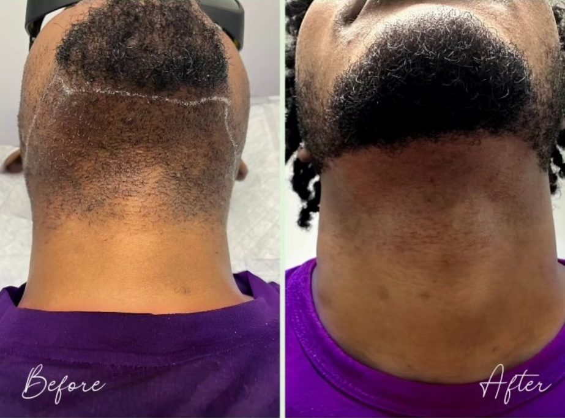
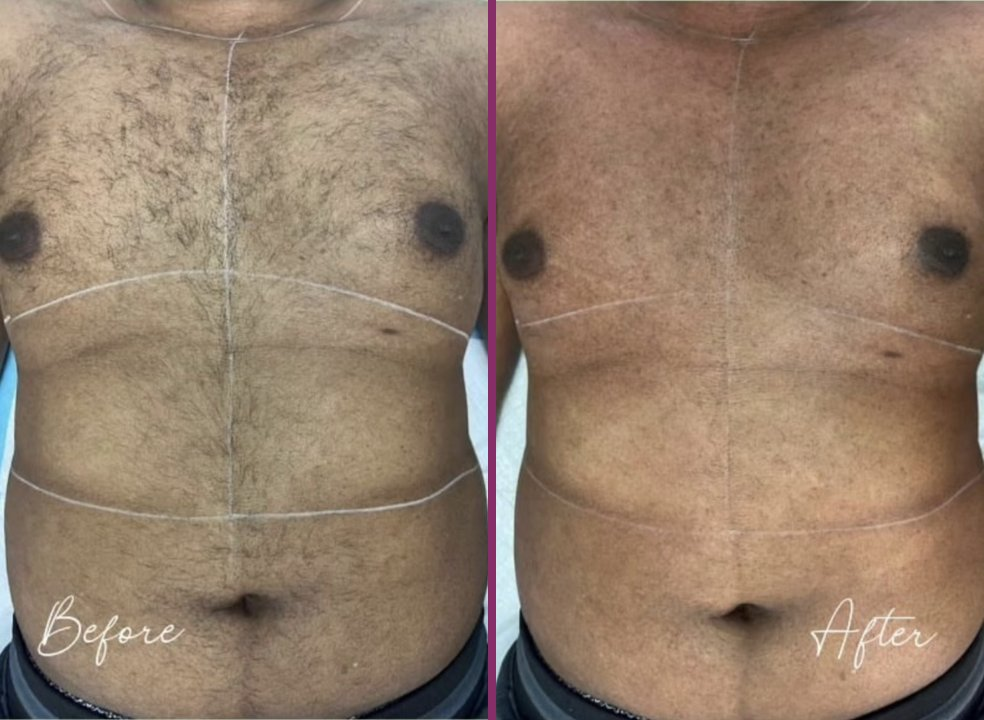
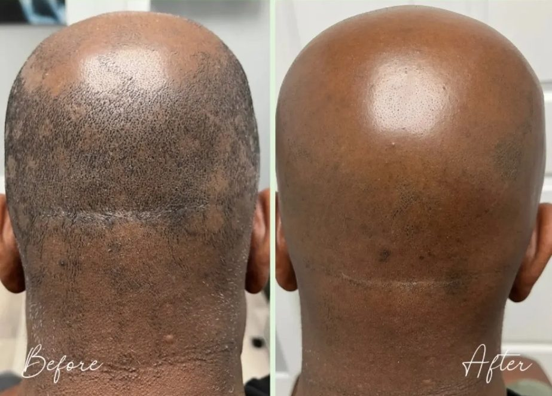
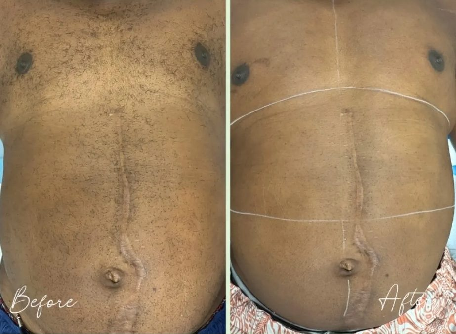

Home / Laser for men
A sharp beard line, without the bumps.
Laser keeps your beard line clean between barber visits and cuts down the razor bumps and ingrowns on your chin and neck. Crystal sets it for your skin, including deeper skin.
- Most common
- Beard line and neck
- Most clients need
- 8 to 12 sessions
- Safe for
- Every skin tone
$499
Unlimited laser for a full year
First-time clients only. The chin and the front and back of the neck all qualify.
See eligible areasSet the line once
You decide where your beard line sits. Crystal treats only the hair outside it, on the cheeks and neck, so the edge stays crisp longer and you shave less in between cuts.
Laser gives permanent hair reduction, so take your time choosing the line at your consult. Anything inside it is left alone.
Razor bumps on the neck
Curly beard hair cut close tends to curl back into the skin, and that's where razor bumps come from. Laser treats the follicle, so over your sessions there's less hair, and finer hair, left to grow back in.
On deeper skin, Crystal uses the Nd:YAG laser, which passes through skin pigment to reach the follicle. More on ingrowns and razor bumps
Popular areas for men
Prices are for a 4-session package. 8 and 12 session packages are on the full price list.
Payment plans through Cherry, as low as 0% interest for up to 12 months.
Results from the chair
Every photo is a Relax & Cruz client, treated by Crystal. Results vary from person to person.





Every session is with Crystal
Crystal has owned and run the spa since 2019, and she does every treatment herself, matched to your skin and your hair.
- Florida licensed electrologist, EO 4649
- Candela GentleMax Pro Plus laser
Questions men ask
Will laser thin out my beard?
Only where it's treated. Crystal treats the hair outside the line you choose and leaves your beard alone. Because laser gives permanent hair reduction, pick your line carefully at your consult.
Is it safe on dark skin?
Yes, with the right laser. The Nd:YAG's longer wavelength passes through skin pigment to reach the follicle, and it's the standard choice for deeper skin.
How many sessions will I need?
Most clients need 8 to 12 sessions, spaced 6 to 8 weeks apart, because hair grows in cycles. Beard hair is coarse, so your consult will give you a realistic plan.
Does it hurt?
Most clients describe it as a quick snap against the skin, with cooling built into the laser.
How do I prepare?
Shave the area the day before. Skip waxing and plucking between sessions, since laser needs the hair's root in place.
Start with a free consult.
Show Crystal where you want your line, learn your skin type, and leave with a plan and a price.
Pay over time with Cherry — as low as 0% interest for 12 monthsHours
Tuesday to Saturday, 10am to 6pm
Sunday and Monday, closed